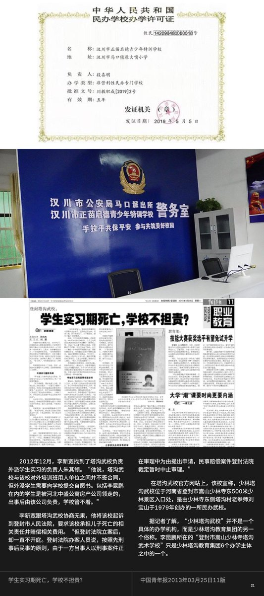
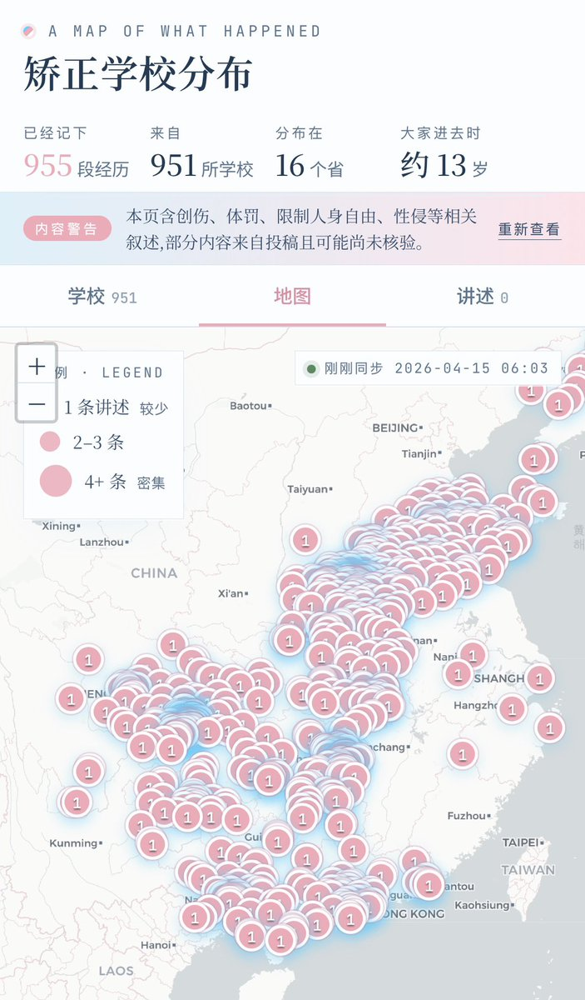
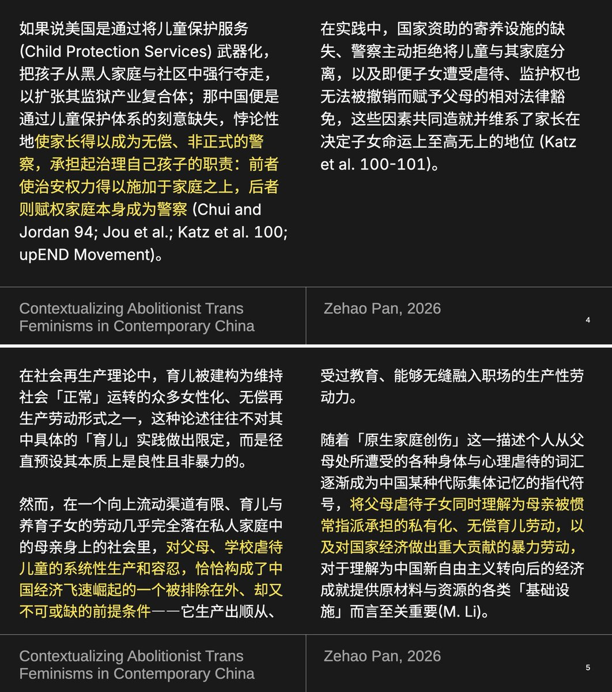

同样需要强调的是，随着该产业的发展，许多强制矫正机构已经和当地政府和警方形成了密切的合作关系。由于许多该类机构都选址于经济欠发达地区乃至农村，该类机构会主动拉拢当地村民，通过提供经济报酬乃至修路等行为为村民创收。
除此之外，该类机构高昂学费和低廉运营成本还可以为当地政府创收，也为退伍警察和军人创造了再就业机会、降低了政府维稳支出，并且也和当地黑恶势力乃至产业龙头形成了紧密的合作关系。在这些因素的影响下，当地警察往往成为了矫正机构的打手，会将外逃的孩子抓回机构，也会和当地机构通风报信、阻止营救行动。这部分的内容在@LwrDHYyuxR22499 的推特中已经有着大量明确记录，我就不在此继续赘述了。
除此之外，该类机构高昂学费和低廉运营成本还可以为当地政府创收，也为退伍警察和军人创造了再就业机会、降低了政府维稳支出，并且也和当地黑恶势力乃至产业龙头形成了紧密的合作关系。在这些因素的影响下，当地警察往往成为了矫正机构的打手，会将外逃的孩子抓回机构，也会和当地机构通风报信、阻止营救行动。这部分的内容在@LwrDHYyuxR22499 的推特中已经有着大量明确记录，我就不在此继续赘述了。


